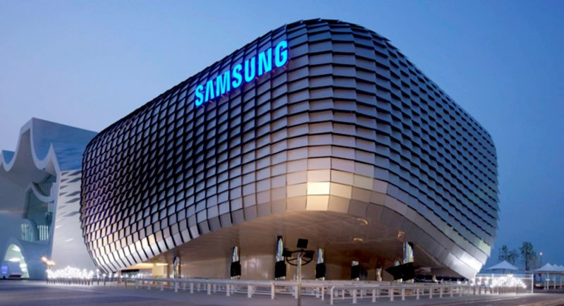
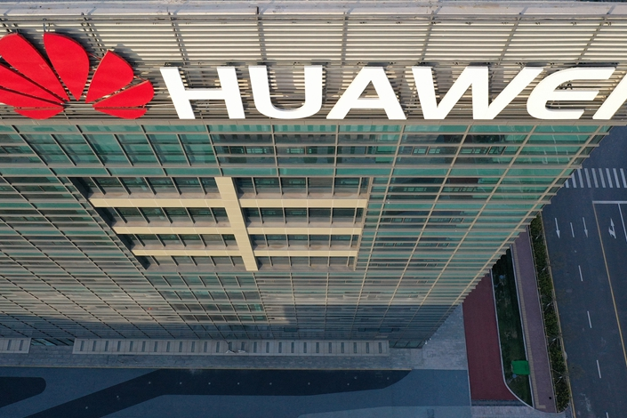
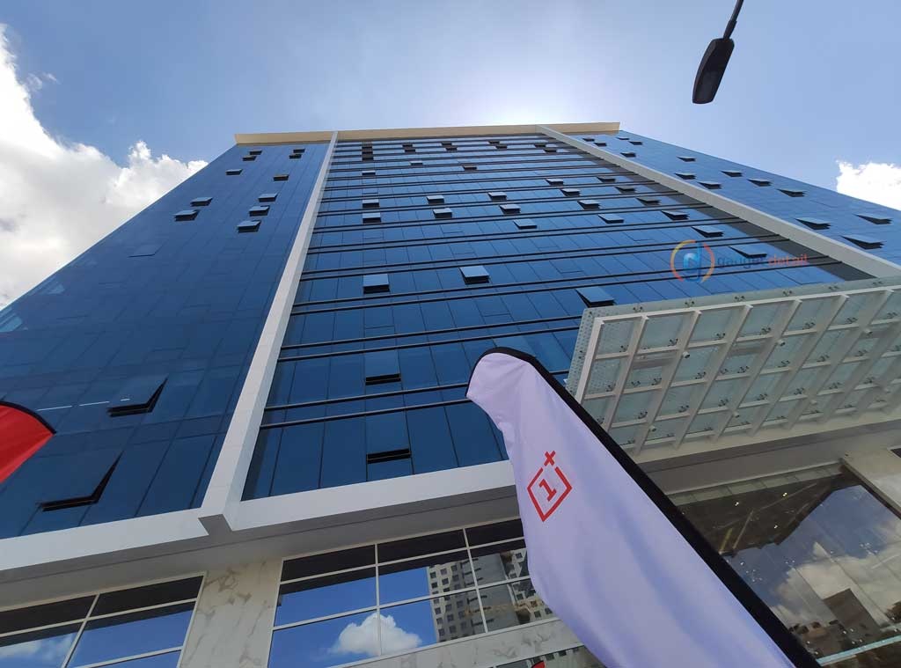

Samsung

In 2005, Samsung Electronics surpassed its Japanese rival, Sony, for the first time to become the world's twentieth-largest and most popular consumer brand, as measured by Interbrand. In 2007, Samsung Electronics became the world's second-largest mobile-phone maker, overtaking Motorola for the first time. In 2009, Samsung achieved total revenues of US$117.4 billion, overtaking Hewlett-Packard to become the world's largest technology company measured by sales.
The company has set an ambitious goal of reaching $400 billion in annual revenues within ten years. The company has 24 research-and-development centers around the world, and since the early 2000s and in the Vision 2020, Samsung has emphasized technical research and development. In April 2011, Samsung Electronics sold its HDD commercial operations to Seagate Technology for approximately US$1.4 billion. The payment was composed of 45.2 million Seagate shares (9.6 percent of shares), worth US$687.5 million, and a cash sum for the remainder. In May 2013, Samsung announced that it had finally managed to test speed-enhanced fifth generation technology successfully.
Huawei

The company was founded in 1987 by Ren Zhengfei, a former Deputy Regimental Chief in the People's Liberation Army. Initially focused on manufacturing phone switches, Huawei has expanded its business to include building telecommunications networks, providing operational and consulting services and equipment to enterprises inside and outside of China, and manufacturing communications devices for the consumer market. Huawei has over 194,000 employees as of December 2019.
Huawei has deployed its products and services in more than 170 countries. Huawei overtook Ericsson in 2012 as the largest telecommunications equipment manufacturer in the world, and overtook Apple in 2018 as the second-largest manufacturer of smartphones in the world, behind Samsung Electronics. In December 2019, Huawei reported that its annual revenue had risen to US$121.72 billion in 2019.
As of the end of 2018, Huawei sold 200 million smartphones. They reported that strong consumer demand for premium range smart phones helped the company reach consumer sales in excess of $52 billion in 2018. Huawei announced worldwide revenues of $105.1 billion for 2018, with a net profit of $8.7 billion. Huawei's Q1 2019 revenues were up 39% year-over-year, at US$26.76 billion. In 2019, Huawei reported revenue of US$122 billion.
Oneplus

OnePlus is a Chinese smartphone manufacturer that is based in Shenzhen, Guangdong. It was founded by Pete Lau (CEO) and Carl Pei on 16 December 2013. Oneplus manufactured many phones including the Oneplus 1-7. Includes T versions and Pro editions. Oneplus sometimes put limited edition colors on the phones like the McLaren Edition was a special and limited edition color. Oneplus is in the Top 5 premium smartphone manufacturers. They created many phones and just created their 5G phones.
The company's first product was the highly anticipated OnePlus One. It was unveiled on 22 April 2014, and was claimed as the "2014 Flagship Killer." The One had comparable, and in some ways better, specifications to other flagship phones of the year, while being sold at a significantly lower price at $299 for the 16 GB version or $349 for the 64 GB version. In May 2019 OnePlus makes a deal with ‘Avengers’ star Robert Downey Jr. to endorse OnePlus 7 Pro. In a statement, Pete Lau, Founder-CEO of OnePlus, said, “We believe in having a laser focus in everything we do and in doing whatever it takes to create an exceptional experience for our community. Working with Robert Downey Jr, we see that these ideologies are reflected in him as well, in his creativity and dedication.